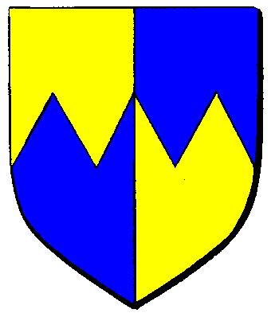

| Übersicht,
Allgemeines |
|
Mal ne Frage..
|
| Aredrihan côn Hônor (RIP) |
Also so wie ich das hier im Moment so überblicke die gesamte Situation auf der Scherbe denke ich mir...
Will Aron ne Wirtschaftssimulation hier draus machen??
Ich weiß nicht aber es kommt keine richtige Action(sag ich mal so) zwischen den Spielern auf.
Nur Kriege wie jetzt gegen Monster aber sonst nichts. Nur handeln aufbauen und verkaufen.
Is das so beabsichtigt das SW zur Handelsimulation "verkommt"?
Ich fands doch mit paar Konflikten verteilt über die Scherbe lustiger... |
26.10.04 19:19

|
|
| RIP Elamshina Asdana (RIP) |
jeder hat land städte und genug petro plätze also wofür kämpfen? |
26.10.04 19:23
|
|
| Lómaralas Nil-Gar (RIP) |
Naja nachdem die Wächter von Walhalla mich besuchten und meine Gebäude in Ruinen verwandelt wurden war es mir doch ein bisschen zuviel Action *g* Naja ich denke, a) es gibt schon einige Kriege, in der Beta war ich auch nie an einem beteiligt, man kann sich halt raushalten oder in einen der bestehenden Konflikte eingreifen und b) bin ich vollkommen überzeugt, dass irgendwann der Punkt da ist wo auch für den Reichsten das Geldverdienen witzlos wird und er mal einen Krieg anzettelt um seine lang verdiente Macht auch zu prüfen.
Das Argument kann man auch umkehren, gerade weil es so viel Land gibt, sind die Städte kaum versorgt (Zumindest bei uns auf der Kaffeeinsel, auf der Lagerinsel mag es anders sein) und jeder ist zu sehr damit beschäftigt das Fresschen für seine Einwohner zusammen zu kramen, da ist keine Zeit für Kriegszüge.
Kriege haben meiner Meinung nach in einem Spiel wie diesem viel mit Langeweile zu tun, sobald die aufkommt, machen sich Leute Feuer unter dem Arsch, da bin ich sicher ;-) |
26.10.04 20:27
|
|
Thomas Eisenhart
 |
Lauf einfach mal los und greife wahllos Karavanen, Gebäude und Spieler an! Schon bald wirst Du Dich vor Action kaum noch retten können! |
26.10.04 20:30
 |
|
| Oren Ereliath (RIP) |
Find ich zudem nicht ganz fair, das Aron und die Orksess-Jungs sich Mühe geben um eine Orkqueste zu machen und mitten im laufenden Quest schreibt einer es gehe nichts ab.
Pack Dein Schwert und ziehe vorne an der Front gegen die Orks in den Krieg, oder stelle ein Sonderkommando zusammen welches die Orks auszuhorchen versucht oder was weiss ich.
Grundsätzlich ist das ein Rollenspiel, da kann man Bürgermeister machen wenn man Wirtschaft will, und Abenteuer wenn man Action will.
Deine Wünsche und Vorstellungen (und evtl die engine des spiels :P) setzen dir Grenzen, sonst nichts.
Also lass krachen *gg* |
26.10.04 20:37
|
|
| Falster von Distelflamme (RIP) |
hatte bisher immer recht viel aktion die runde hehe |
26.10.04 21:12
|
|
Ye Yett
 |
Beantworte lieber mal die Frage, was man bei einem Krieg gewinnen kann, dann weisst Du wieso keine geführt werden ;-)
|
26.10.04 21:18
|
|
| Nevnár Stain (RIP) |
Es sind doch ständig Kriege am laufen!
Allein der Quest mit den Orks hat schon eine menge Potenzial!
Ausserdem werden die richtigen Kriege immernoch im Hintergrund geplant und entwickelt! Bzw. ein Krieg wird stattfinden sobald er stattfindet, meist dann wenn man ihn nicht erwartet! Sowas entwickelt sich meist von selbst, da gerade diejenigen die viel auf RPG legen auch impulsiver handeln als solche die nüchtern überlegen, und wenn man so rumguckt muss man nach einer weile erkennen das man sich inmitten eines Pulverfasses befindet, es kann jederzeit an jedem ort ein konflikt auftun.
Sei froh das Du immoment keine "Action" hast, dann kannst Du Dich schonmal auf sowas vorbereiten und Dich dagegen wappnen! |
26.10.04 22:11
|
|
| Patriarch der III. (RIP) |
Aredrihan Ald Ruhn, du hast womöglich noch nicht erfasst WIE komplex Scherbenwelten wirklich ist. Wer sich hier langweilt ist selber schuld ;-) |
26.10.04 22:18
|
|
| Erondril Erynherdir (RIP) |
Meiner meinung nach ist soger der Handel zu Zeit er schwach, ich kann mich an zeiten in der Beta erinnern wo das Handeln wesentlich spannender war. |
26.10.04 22:43
|
|
Artor Draconigena
 |
Naja, das Land ist groß, die Wege weit, jeder einer wollte ne Stadt die auch gebaut wurde nd nun sehen viele das sie sich einfach übernommen haben und sind damit beschäftigt iegentwie zu überleben.
Die Möglichkeiten "Hilfsmittelchen" wie E-drinks und solche sachen sind auf grund der Knappheit der Resourcen beschränkt.
Also wenn mann hier was erreichen will, muss man sich schon ganzschön strecken und Dampf machen.
Also ich kann mich über Langeweile wirklich nicht beschweren.
Es ist halt kein Spiel, das mann mal eben einmal die Woche anmacht und mal nebenbei spielen kann, WENN man was erreichen will.
*auf das Jammern wegen zu wenig AP mal verzichtet, wobei eine Sammelgrenze bei 7200/pro Tag ja schon schön...hüstel*
Ja,äääh,genau. *g* |
27.10.04 12:41
|
|
| Fáin Cortez (RIP) |
ich hab spass...*wichtel jagen geht* |
27.10.04 13:43
|
|
| Sol Feuerschatten (RIP) |
hehe Fain :)
Aredrihan Ald Ruhn, mach doch einfach am Orkenquest mit :)
Wenn ich die Orkführer richtig einschätzen kann gibts bald den nächsten Überfall :) |
30.10.04 12:04
|
|
| Hhugulark der Weise (RIP) |
Nö!
Aus Prinzip jetzt erst recht nicht! *grins* |
30.10.04 15:35
|
|
| Sol Feuerschatten (RIP) |
unfair! *grummelt* Dann schickt mir bitte ein paar Orkbabyz..per Post oder so..
Myrlocharia Noamuth
"jeder hat land städte und genug petro plätze also wofür kämpfen?"
Manchen Leuten macht das kämpfen Spaß ;)
Auserdem muss man sich in jeder Situation gut zu verteidigen wissen ;) |
31.10.04 21:34
|
|
Übersicht,
Allgemeines
|